Diseñamos, suministramos e implantamos tecnología de medición y automatización para la industria de hidrocarburos venezolana — desde el pozo hasta la sala de control.
Contactar Ahora Ver ServiciosInacom Oriente es una empresa de tecnología especializada en Medición de Hidrocarburos, Automatización, Informática y Comunicaciones, que ofrece servicios integrales desde el desarrollo de ingeniería hasta la implantación de proyectos.
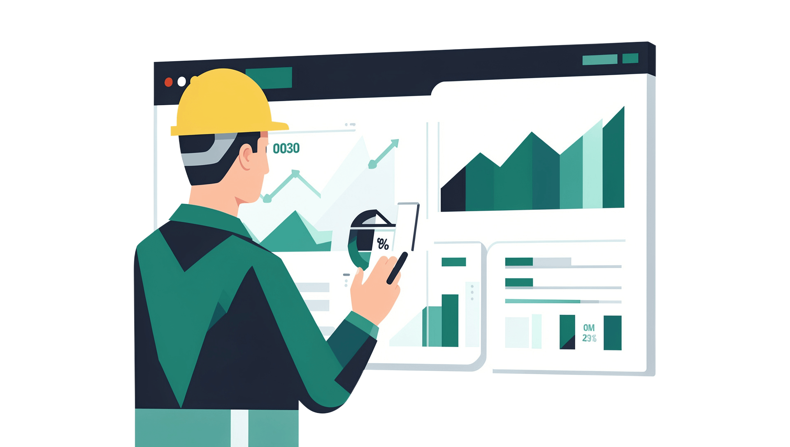
Nuestras capacidades se organizan en cinco áreas centrales bajo un único punto de responsabilidad.
Estructura matricial que combina disciplina de gerencia de proyectos con especialización técnica profunda.
Servicios integrales en todas las fases del proyecto — desde la visualización hasta el despliegue final.
Sistemas completos de medición fiscal, de referencia y de transferencia de custodia, en instalaciones de producción, oleoductos e infraestructura de almacenamiento.
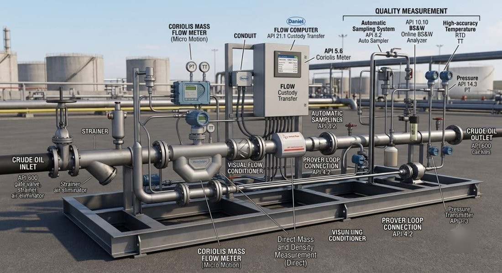
🔍 Clic para ampliarSkid de transferencia de custodia con medidor Coriolis, computador de flujo y muestreador automático.
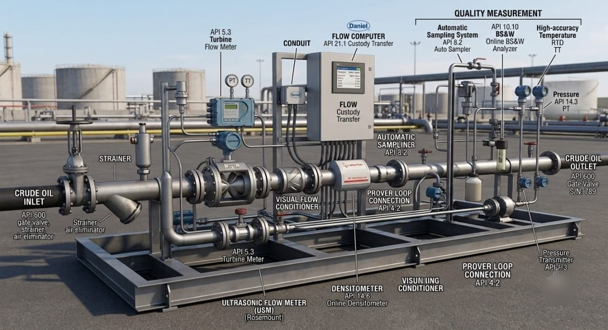
🔍 Clic para ampliarSkid alterno con medidor de turbina, densitómetro en línea y acondicionador de flujo.
Sistemas de medición fundamentales para la producción y el almacenamiento de crudo, garantizando precisión y eficiencia en cada etapa. Ambos sistemas están integrados con el Computador de Flujo para cálculos volumétricos precisos y certificados.
Sistema de medición en tiempo real para líneas de transferencia y estaciones de flujo.
Sistema de medición estática para almacenamiento y control de inventario.
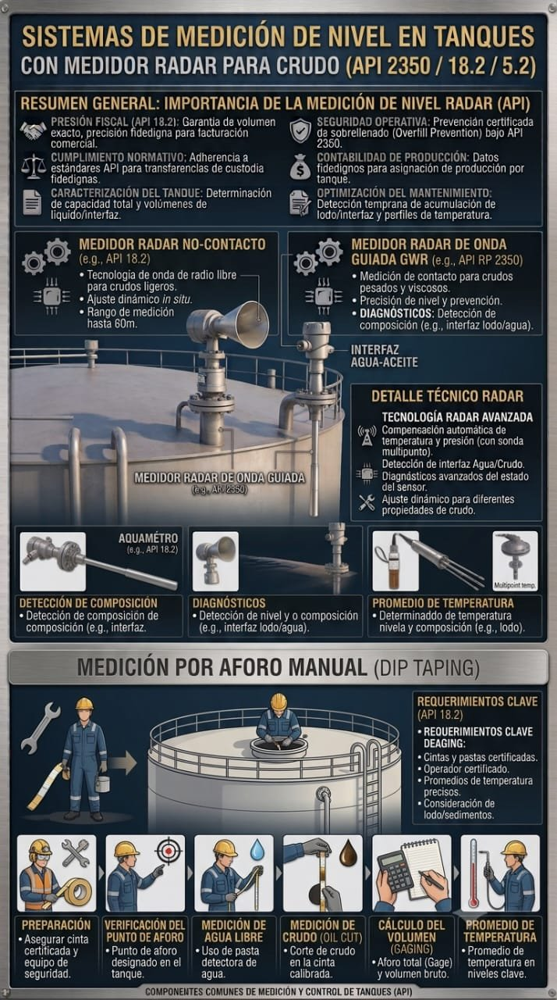
🔍 Clic para ampliarMedidor radar de nivel para tanques de crudo, bajo normas API 2350 / 18.2 / 5.2 — incluye referencia de aforo manual (dip taping).
Inacom Oriente implementa sistemas especializados de medición de gas para múltiples aplicaciones en la cadena de producción, desde separadores hasta plantas de compresión y puntos de venta.
Componentes principales:
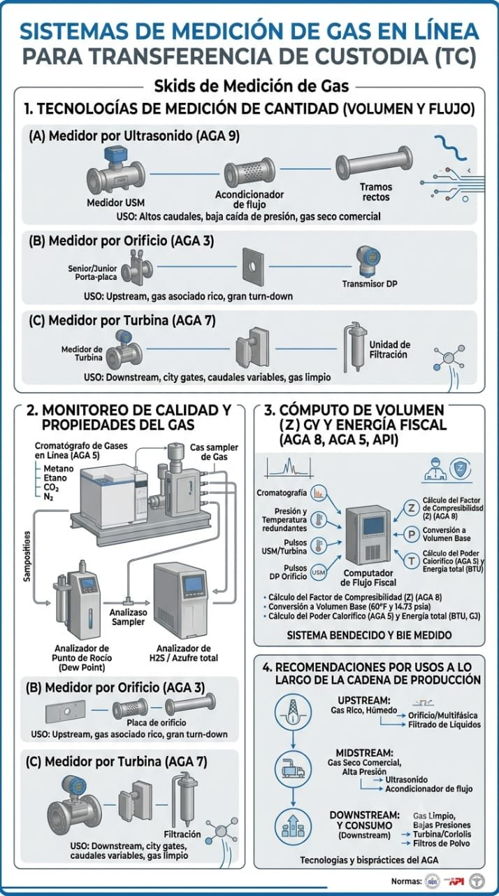
🔍 Clic para ampliarTecnologías de medición de gas (ultrasonido AGA 9, orificio AGA 3, turbina AGA 7), monitoreo de calidad y cómputo fiscal según AGA/API.
Asesoría analítica que soporta la excelencia operacional, el cumplimiento regulatorio y la toma de decisiones estratégicas.
Desarrollo de Planes Maestros de Medición, Automatización, IT y Comunicaciones, incluyendo planes operativos y de mantenimiento.
Análisis estadístico de pruebas de pozos y medición de crudo y gas en puntos fiscales y referenciales.
Preparación de documentación para propuestas de medición ante organismos gubernamentales.
Generación de indicadores de gestión para procesos de medición y plataformas de automatización e IT.
Validación de instrumentos fiscales bajo estándares reconocidos internacionalmente.
Calibración y validación en patios de tanques PTOR, PTJ, PTT, PTO, TAEJ y TAEG.
Calibración y validación en línea en patios de tanques.
Certificación de transmisores de presión y temperatura en estaciones de flujo.
Validación de presión y temperatura en estaciones de flujo U.P. Carito/Pirital.
Validación de cálculos en estaciones de flujo, Maturín, Edo. Monagas.
Calibración en líneas de bombeo y terminales de embarque.
Participación técnica en las mesas y comités que gobiernan la medición fiscal y el balance de crudo y gas.
Multidisciplinarias de Medición, Automatización, IT y Comunicaciones.
Control de Mermas y Pérdidas de Crudo Oriente.
Comité de Balance de Gas Oriente.
Volumetría de Crudo ante la OPEP.
Mesas técnicas con organismos gubernamentales rectores.
Auditoría a Sistemas de Medición, División Punta de Mata.
Tecnologías de campo avanzadas y herramientas digitales impulsadas por IA que extienden la visibilidad desde el cabezal del pozo hasta la sala de control.
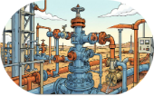
Caudalímetros multifásicos en cabezales y manifolds de prueba que permiten pruebas continuas y no intrusivas de pozos.
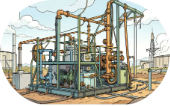
Skids de inyección diseñados con medición, válvulas de control y sistemas de seguridad para asignación precisa de gas.
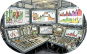
Integración en tiempo real con historiadores industriales como OSIsoft PI System y CIOC, centralizando datos.
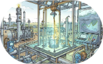
Nuestro módulo propietario VFPM aplica correlaciones PVT calibradas con IA para simular pruebas de pozos continuamente.
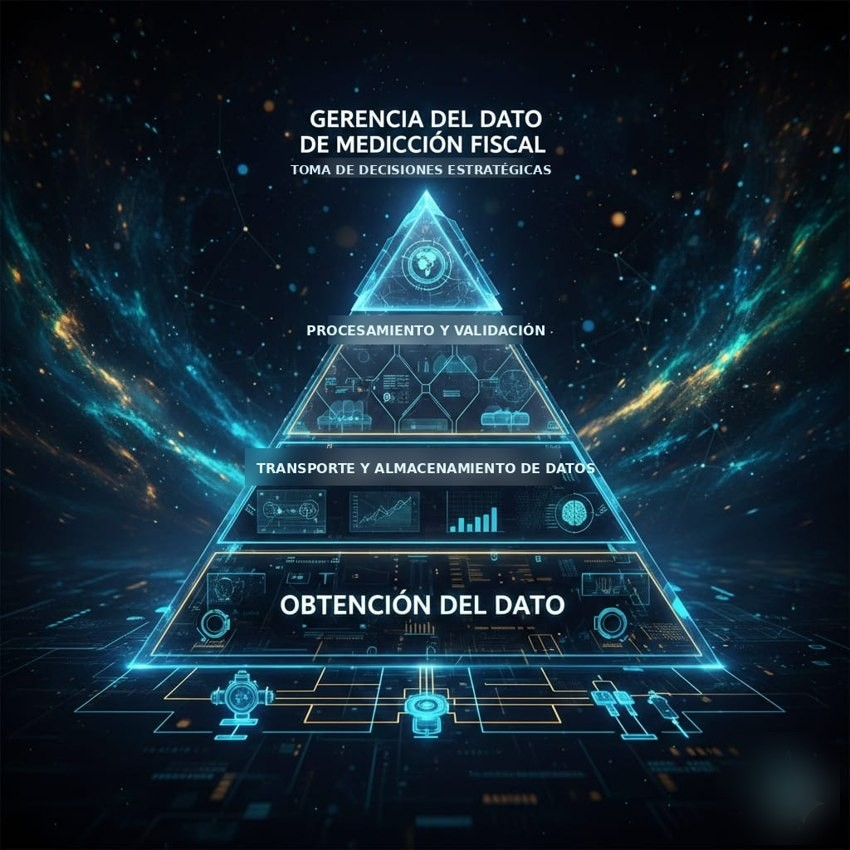
🔍 Clic para ampliarEl dato de campo recorre cuatro etapas hasta convertirse en decisión estratégica — infraestructura que sostiene la integración PI/CIOC y el módulo VFPM.
Pruebe en vivo el tipo de análisis que alimenta nuestro módulo VFPM — basado en correlaciones reales de ingeniería de yacimientos.
Curva calculada con la ecuación de Vogel (1968) para pozos de empuje por gas en solución. El "punto sugerido" ilustra una región de operación eficiente entre caudal y presión de fondo — no sustituye un análisis nodal completo.
Simulación ilustrativa de declinación de producción (modelo exponencial de Arps) comparando un pozo sin intervención frente a un escenario con ajuste optimizado de gas lift y choke sugerido por IA.
Arquitectura de control de pozos totalmente automatizada, soportada por redes inalámbricas industriales.
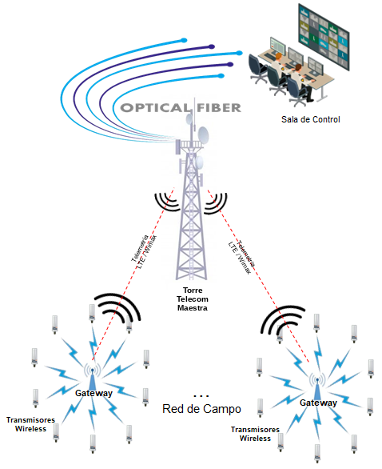
🔍 Clic para ampliarRed de campo real: integra transmisores inalámbricos de patines de inyección de gas lift y de cabezales de pozo (árbol de navidad) hacia la Sala de Control CCC-EPJ2 vía fibra óptica y telemetría LTE/WiMAX.
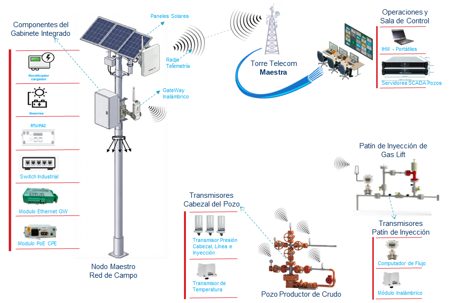
🔍 Clic para ampliarDetalle del nodo maestro de campo (paneles solares, radio telemetría, gateway inalámbrico) que integra las señales del pozo productor y del patín de inyección de gas lift hacia el SCADA, mediante radios CPE LTE.
Este marco jerárquico asegura la integración fluida desde la instrumentación de campo hasta los sistemas de gestión empresarial.
Haz clic en un nivel de la pirámide para ver el detalle.
El recorrido del dato de producción desde el pozo hasta la entrega final en terminales.
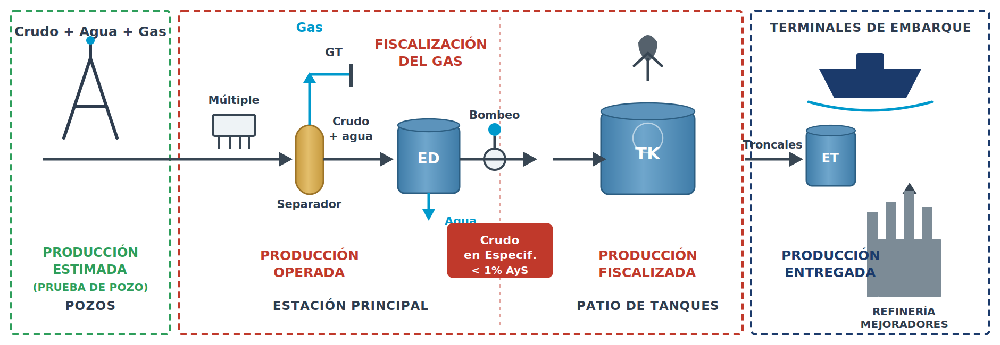
🔍 Clic para ampliar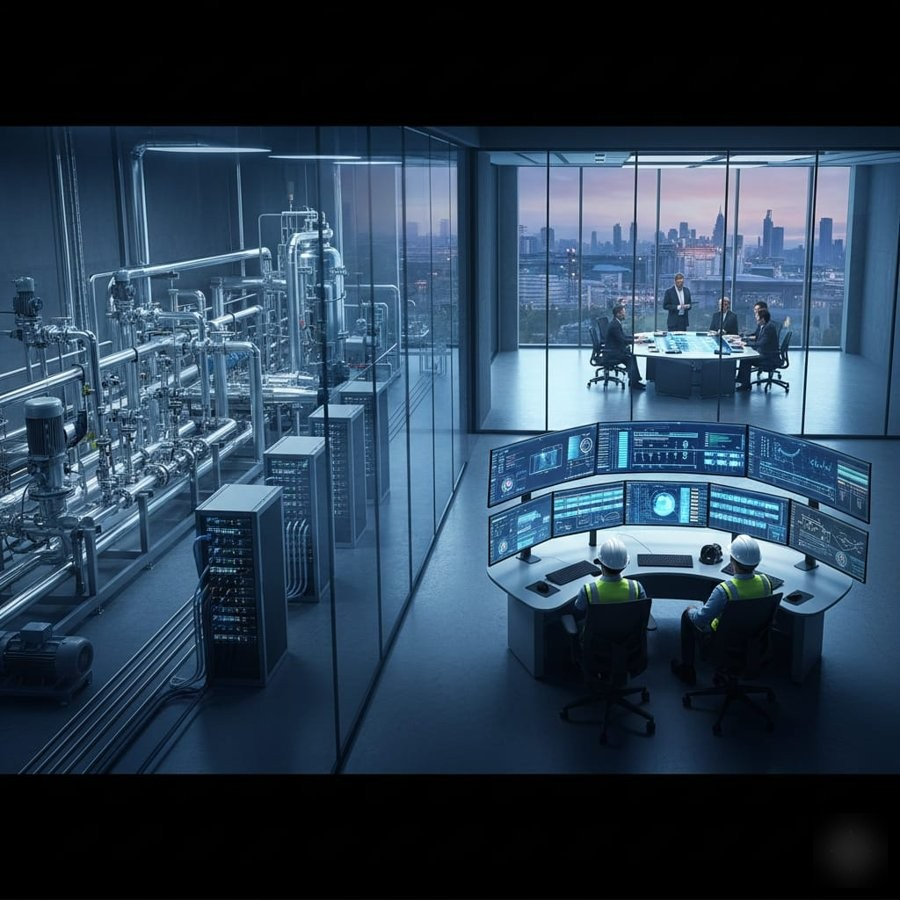
🔍 Clic para ampliarLa parte estratégica: sala de control donde convergen los datos de medición para la toma de decisiones.
De la visualización al arranque — cada fase entrega productos con nivel de precisión de costos creciente.
Todo desarrollo se ejecuta bajo el cumplimiento estricto de las normativas nacionales e internacionales.
Ocho proyectos representativos de más de 20 ejecutados en toda la División Oriente de PDVSA.
Integración subsuelo–superficie que conecta pozo y planta.
San Tomé, AnzoáteguiAutomatización integral de la medición de gas en Oriente.
Puerto La CruzPlataforma de prueba de pozos sin separación de fases.
División FurrialModernización de la medición fiscal de crudo en línea.
Punta de MataSistema fiscal unificado para toda la división.
OrienteAuditoría integral de los sistemas SCADA.
OrienteValidación internacional de la volumetría de crudo de PDVSA.
Maturín, MonagasControl de mermas y pérdidas del balance volumétrico.
Puerto La CruzServicios de fabricación, instalación y construcción mecánica para infraestructura de campo en la industria de petróleo y gas.
Conexiones en caliente en líneas de gas y crudo, sin interrumpir el servicio ni detener la producción.
Clic para ver detalle ▾Spools, componentes a medida y soldadura industrial certificada.
Clic para ver detalle ▾Válvulas, bridas y accesorios de tubería instalados en sitio.
Clic para ver detalle ▾Postes, casetas de telemetría y equipo de acceso para trabajos en campo.
Clic para ver detalle ▾